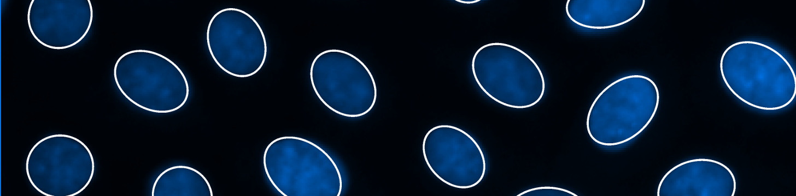
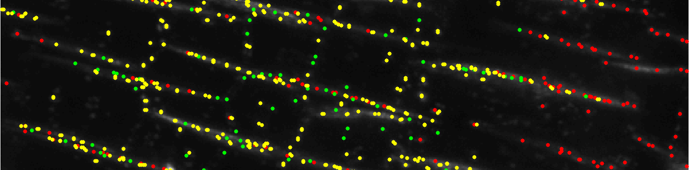

My research interests focus on the interface of hardware, software and wetware in the pursuit of high quality, quantitative bioimaging. This interface requires the integration of skills from computing, engineering, physics, chemistry and the life sciences and, as such, my research career has moved me between disciplines and has always involved a large number of cross-disciplinary collaborations.
There are many interesting challenges at this interface including the reductions of photo-damage, the issues of low signal-to-noise ratios and of complex objects and images often with occluded or incomplete structures. These complications often have to be solved in a scenario-specific manner using a combination of bright optics (pun intended) and computational analysis.
You can find my publications here.
My current research focusses on real-time image processing for the synchronisation of 3D images of the, in vivo, beating zebrafish heart as Research Assistant to Dr Jonathan Taylor.
The zebrafish (Danio Rerio) is popular model organism in microscopy due to it's optical transparency and the wide range of fluorescence transgenic lines now available. Zebrafish are even more attractive as models for cardiac developmental biology due to the similarity to early mammalian heart development and, in cardiac injury and repair, due to their amazing ability to regenerate heart tissue.
Despite all these benefits, the constant motion of the heart is a major obstacle to live imaging and, in the past, fish have been fixed or their heartbeats have been pharmaceutically slowed down. Our research aims to develop the hardware and software needed to create truly synchronised 3D images of whole heartbeats over long time periods so that the long term effects of drugs or injury on heart and vasculature can be elucidated.
To this end we collaborate with researchers from the Centre for Cardiovascular Science at University of Edinburgh, where we're working towards detailed long-term studies of heart morphology and structure both during development and regeneration. This research is funded by the British Heart Foundation.
Working with Cigdem Sazak and Boguslaw Obara (Durham University) I developed a new approach for the enhancement of vessel-like objects in biological and medical imaging called the bowler-hat transform. We have used this approach in the analysis of fungal and slime mould networks, with our collaborator Mark Fricker (Oxford University), retinal imaging and brain vasculature.
At Durham University, my PhD research focussed on the use of mathematical morphology to quantify biological and medical images. One such challenge was the automated detection of ellipse-like objects, such as cell nulcei, in fluorescence microscopy. Working with Philip Jackson and Boguslaw Obara, I developed a new approach to identifying ellipses based on Hilbert-edge detection and ranging (HEDAR) and assumptions based on the shape on an ellipse.
Working with researchers at Durham University, the University of Essex and the University of Exeter, I published an article focussing on the benefits of using object-based approaches to quantify colocalisation experiments. The article highlighted not only the benefits of such an approach but the importance of understanding the underlying algorithms and their assumptions by showing the biases and uncertainties of the approach.
Working with a team at Durham University we developed a new, high-speed GPU implimentation of a level-set segmentation method that is robust to inhomogeneity in the object and weak or missing boundaries between foreground and background.